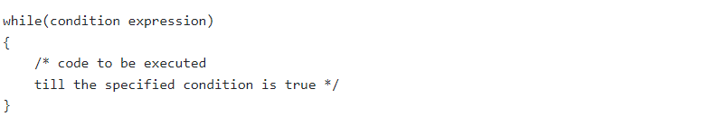
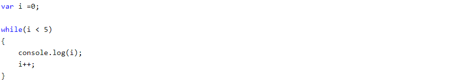

Loops
What is JavaScript Loop?
• Loop is a JavaScript control statement which executes blocks of code repeatedly. A code block or block of code is a code between {and}.
There are four types of loops in JavaScript.
• for loop
• while loop
• do-while loop
1). JavaScript For loop
The JavaScript for loop iterates the elements for the fixed number of times. It should be used if number of iteration is known.
The syntax of for loop is given below:
Let’s see the simple example of for loop in javascript:
2). JavaScript while loop
The JavaScript while loop iterates the elements for the infinite number of times. It should be used if number of iteration is not known. The syntax of while loop is given below.

Let’s see the simple example of while loop in javascript:

3). JavaScript do while loop
The JavaScript do while loop iterates the elements for the infinite number of times like while loop. But, code is executed at least once whether condition is true or false. The syntax of do while loop is given below.
Let’s see the simple example of do while loop in javascript: